स्कन्ध 11 · अध्याय 21
श्लोक १
श्रीभगवानुवाच–
य एतान् मत्पथो हित्वा भक्तिज्ञानक्रियात्मकान् ।
(य एतां मत्कथां हित्वा भक्तिज्ञानक्रियात्मिकाम् ।)
क्षुद्रान् कामान् खलैः (चलैः) प्राणैर्जुषन्तः संसरन्ति ते।। १ ।।
य एतान् मत्पथो हित्वा भक्तिज्ञानक्रियात्मकान् ।
(य एतां मत्कथां हित्वा भक्तिज्ञानक्रियात्मिकाम् ।)
क्षुद्रान् कामान् खलैः (चलैः) प्राणैर्जुषन्तः संसरन्ति ते।। १ ।।
श्लोक २
स्वे स्वेऽधिकारे या निष्ठा स गुणः परिकीर्तितः ।
विपर्ययस्तु दोषः स्यादुभयोरेष निश्चयः ।। २ ।।
विपर्ययस्तु दोषः स्यादुभयोरेष निश्चयः ।। २ ।।
श्लोक ३
शुद्ध्यशुद्धी विधीयेते समानेष्वपि वस्तुषु ।
द्रव्यस्य विचिकित्सार्थं गुणदोषौ शुभाशुभौ ।। ३ ।।
द्रव्यस्य विचिकित्सार्थं गुणदोषौ शुभाशुभौ ।। ३ ।।
भागवततात्पर्यनिर्णय
श्लोक ४
धर्मार्थं व्यवहारार्थं यात्रार्थमिति वाऽनघ ।
दर्शितोऽयं मयाऽऽचारो धर्म्यमुद्वहता धुरम् ।। ४ ।।
दर्शितोऽयं मयाऽऽचारो धर्म्यमुद्वहता धुरम् ।। ४ ।।
श्लोक ५
भूम्यम्ब्वग्न्यनिलाकाशा भूतानां पञ्च धातवः ।
आब्रह्मस्थावरादीनां शरीरा आत्मसंयुताः।। ५ ।।
आब्रह्मस्थावरादीनां शरीरा आत्मसंयुताः।। ५ ।।
भागवततात्पर्यनिर्णय
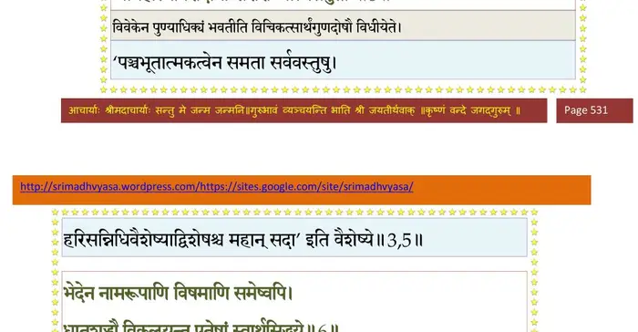
श्लोक ६
भेदेन नामरूपाणि विषमाणि समेष्वपि ।
धातुशुद्ध्यै विकल्प्यन्त एतेषां स्वार्थसिद्धये।। ६ ।।
धातुशुद्ध्यै विकल्प्यन्त एतेषां स्वार्थसिद्धये।। ६ ।।
भागवततात्पर्यनिर्णय
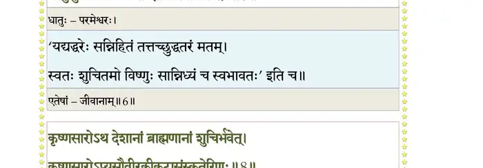
श्लोक ७
देशकालादिभावानां वचनान्मम सत्तम ।
गुणदोषौ विधीयेते नियमार्थं हि कर्मणाम्।। ७ ।।
गुणदोषौ विधीयेते नियमार्थं हि कर्मणाम्।। ७ ।।
श्लोक ८
कृष्णसारोऽथ देशानां ब्राह्मणानां शुचिर्भवेत् ।
कृष्णसारोऽप्यसौवीरकीकटासंस्कृतेरिणः ।। ८ ।।
कृष्णसारोऽप्यसौवीरकीकटासंस्कृतेरिणः ।। ८ ।।
भागवततात्पर्यनिर्णय
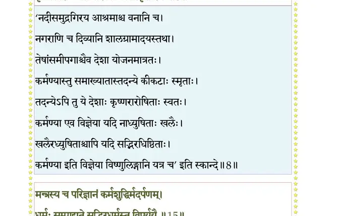
श्लोक ९
कर्मण्यो गुणवान् कालो द्रव्यतः स्वत एव वा ।
यतो निवर्तते कर्म सदोषोऽकर्मकः स्मृतः ।। ९ ।।
यतो निवर्तते कर्म सदोषोऽकर्मकः स्मृतः ।। ९ ।।
श्लोक १०
द्रव्यस्य शद्ध्यशुद्धी च द्रव्येण वचनेन वा ।
संस्कारेणाथ कालेन महत्त्वाल्पतयाऽथ वा।। १० ।।
संस्कारेणाथ कालेन महत्त्वाल्पतयाऽथ वा।। १० ।।
श्लोक ११
शक्त्याऽशक्त्या च वाग्बुद्ध्या समृद्ध्या च तथाऽऽत्मनः ।
अन्ये शुद्ध्यन्ति हि तथा देशावस्थानुसारतः।। ११ ।।
अन्ये शुद्ध्यन्ति हि तथा देशावस्थानुसारतः।। ११ ।।
श्लोक १२
धान्यदार्वस्थितन्तूनां रसतैजसचर्मणाम् ।
कालवाय्वग्निमृत्तोयैः पार्थिवानां युतायुतैः ।। १२ ।।
कालवाय्वग्निमृत्तोयैः पार्थिवानां युतायुतैः ।। १२ ।।
श्लोक १३
अमेध्यलिप्तं यद् येन गन्धलेपं व्यपोहति ।
भजते प्रकृतिं तस्य तच्छौचमुपदिश्यते ।। १३ ।।
भजते प्रकृतिं तस्य तच्छौचमुपदिश्यते ।। १३ ।।
श्लोक १४
स्नानदानतपोवस्थावीर्यसंस्कारकर्मभिः ।
मदभ्यासान्मनःशौचं कृत्वा कर्माचरेद् बुधः ।। १४ ।।
मदभ्यासान्मनःशौचं कृत्वा कर्माचरेद् बुधः ।। १४ ।।
श्लोक १५
मन्त्रस्य च परिज्ञानं कर्मशुद्धिर्मदर्पणम् ।
धर्मः सम्पाद्यते सद्भिरधर्मस्तु विपर्ययैः।। १५ ।।
धर्मः सम्पाद्यते सद्भिरधर्मस्तु विपर्ययैः।। १५ ।।
भागवततात्पर्यनिर्णय
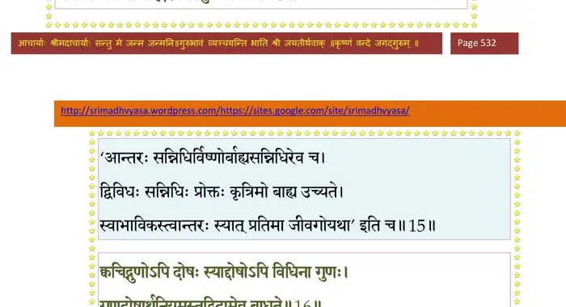
श्लोक १६
क्वचिद् गुणोऽपि दोषः स्याद् दोषोऽपि विधिना गुणः ।
गुणदोषार्थनियमस्तद्विदामेव बाधते।। १६ ।।
गुणदोषार्थनियमस्तद्विदामेव बाधते।। १६ ।।
भागवततात्पर्यनिर्णय
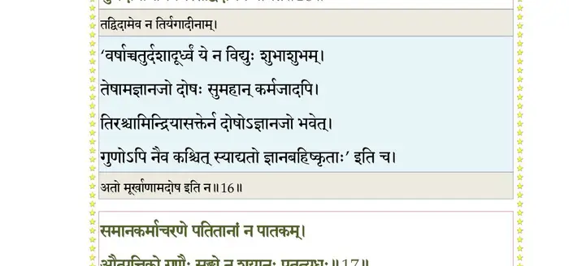
श्लोक १७
समानकर्माचरणेऽपतितानां न पातकम् ।
औत्पत्तिको गुणैः सङ्गो न शयानः पतत्यधः।। १७ ।।
औत्पत्तिको गुणैः सङ्गो न शयानः पतत्यधः।। १७ ।।
भागवततात्पर्यनिर्णय
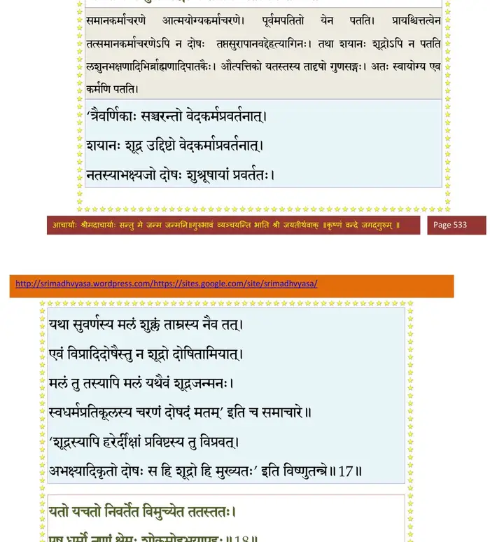
श्लोक १८
यतो यतो निवर्तेत विमुच्येत ततस्ततः ।
एष धर्मो नृणां क्षेमः शोकमोहभयापहः।। १८ ।।
एष धर्मो नृणां क्षेमः शोकमोहभयापहः।। १८ ।।
भागवततात्पर्यनिर्णय
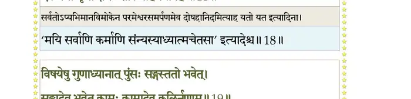
श्लोक १९
विषयेषु गुणध्यानात् पुंसः सङ्गस्ततो भवेत् ।
सङ्गादेव भवेत् कामः कामादेव कलिर्नृणाम्।। १९ ।।
सङ्गादेव भवेत् कामः कामादेव कलिर्नृणाम्।। १९ ।।
भागवततात्पर्यनिर्णय
श्लोक २०
कलेर्दुविषहः क्रोधस्तमस्तदनुवर्तते ।
तमसा ग्रस्यते पुंसश्चेतना व्यापिनी ततः।। २० ।।
तमसा ग्रस्यते पुंसश्चेतना व्यापिनी ततः।। २० ।।
भागवततात्पर्यनिर्णय
श्लोक २१
तया च रहितः साधो जन्तुः शून्याय कल्पते ।
ततोऽस्य स्वार्थविभ्रंशो(ऽ)मूर्च्छितस्य मृतस्य च।। २१ ।।
ततोऽस्य स्वार्थविभ्रंशो(ऽ)मूर्च्छितस्य मृतस्य च।। २१ ।।
भागवततात्पर्यनिर्णय
श्लोक २२
विषयाभिनिवेशेन नात्मानं वेद नापरम् ।
वृक्षजीविकया जीवन् व्यर्थं ग्रस्तवयाः श्वसन्।। २२ ।।
वृक्षजीविकया जीवन् व्यर्थं ग्रस्तवयाः श्वसन्।। २२ ।।
भागवततात्पर्यनिर्णय
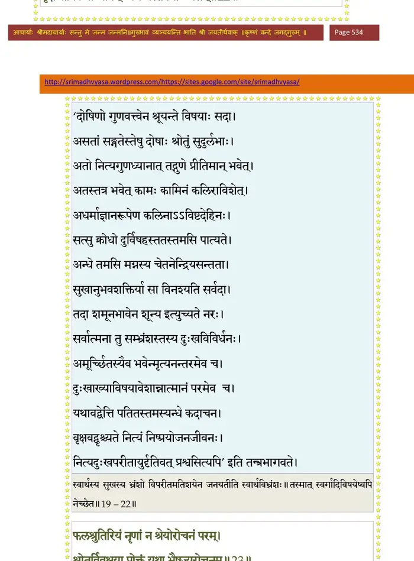
श्लोक २३
फलश्रुतिरियं नॄणां नः श्रेयोरोचनं परम् ।
श्रोतुर्विवक्षया प्रोक्तं यथा भैषज्यरोचनम्।। २३ ।।
श्रोतुर्विवक्षया प्रोक्तं यथा भैषज्यरोचनम्।। २३ ।।
भागवततात्पर्यनिर्णय
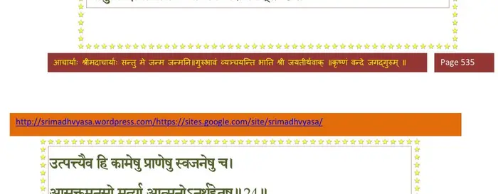
श्लोक २४
उत्पत्त्यैव हि कामेषु प्राणेषु स्वजनेषु च ।
आसक्तमनसो मर्त्या आत्मनोऽनर्थहेतुषु।। २४ ।।
आसक्तमनसो मर्त्या आत्मनोऽनर्थहेतुषु।। २४ ।।
भागवततात्पर्यनिर्णय
श्लोक २५
न तानविदुषः स्वार्थं भ्राम्यतो वृजिनाध्वनि ।
कथं युञ्ज्यात् पुनस्तेषु तांस्तमो विशतो बुधः।। २५ ।।
कथं युञ्ज्यात् पुनस्तेषु तांस्तमो विशतो बुधः।। २५ ।।
भागवततात्पर्यनिर्णय
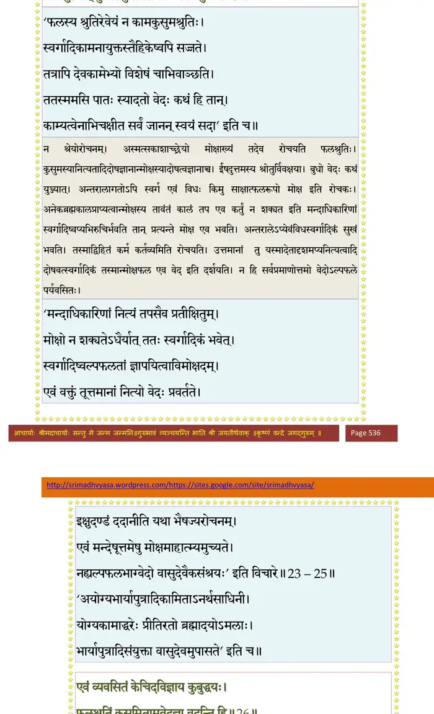
श्लोक २६
एवं व्यवसितं केचिदविज्ञाय कुबुद्धयः ।
फलश्रुतिं कुसुमितामवेदज्ञा वदन्ति हि ।। २६ ।।
फलश्रुतिं कुसुमितामवेदज्ञा वदन्ति हि ।। २६ ।।
भागवततात्पर्यनिर्णय
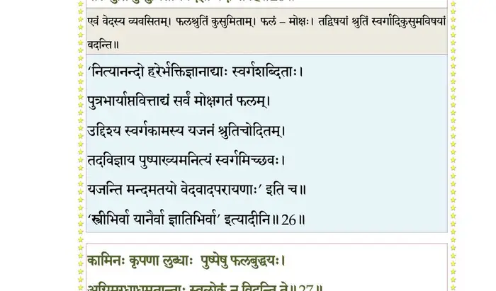
श्लोक २७
कामिनः कृपणा लुब्धाः पुष्पेषु फलबुद्धयः ।
अग्निमुग्धा धूमतान्ताः स्वलोकं न विदन्ति ते।। २७ ।।
अग्निमुग्धा धूमतान्ताः स्वलोकं न विदन्ति ते।। २७ ।।
भागवततात्पर्यनिर्णय
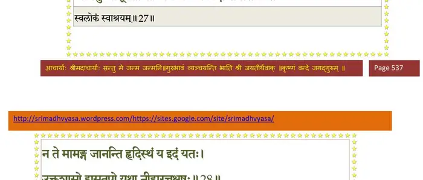
श्लोक २८
न ते मामङ्ग जानन्ति हृदिस्थं य इदं यतः ।
उक्थशासो ह्यसुतृपो यथा नीहारचक्षुषः ।। २८ ।।
उक्थशासो ह्यसुतृपो यथा नीहारचक्षुषः ।। २८ ।।
भागवततात्पर्यनिर्णय
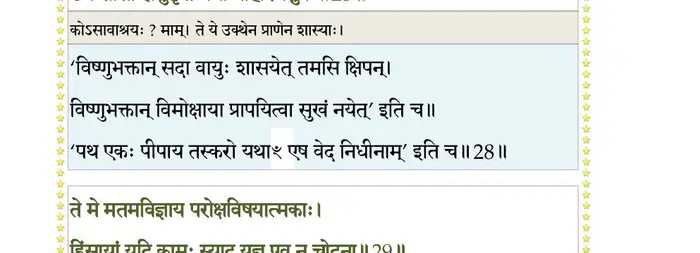
श्लोक २९
ते मे मतमविज्ञाय परोक्षविषयात्मकाः ।
हिंसायां यदि कामः स्याद् यज्ञ एव न चोदना ।। २९ ।।
हिंसायां यदि कामः स्याद् यज्ञ एव न चोदना ।। २९ ।।
भागवततात्पर्यनिर्णय
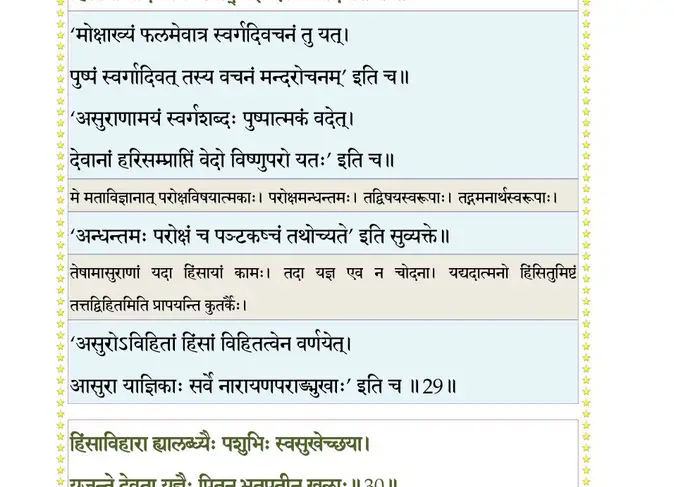
श्लोक ३०
हिंसाविहारा ह्यालब्धैः पशुभिः स्वसुखेच्छया ।
यजन्ते देवता यज्ञैः पितॄन् भूतपतीन् खलाः ।। ३० ।।
यजन्ते देवता यज्ञैः पितॄन् भूतपतीन् खलाः ।। ३० ।।
भागवततात्पर्यनिर्णय
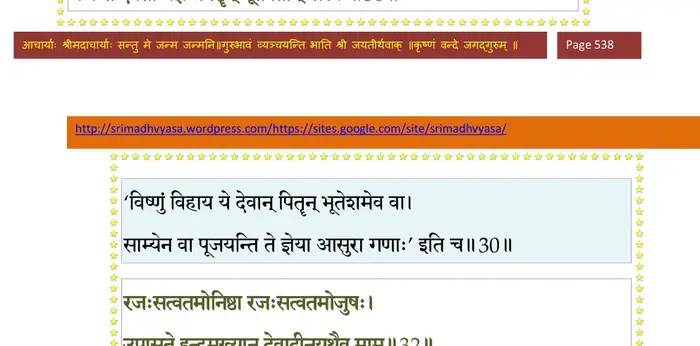
श्लोक ३१
स्वप्नोपमममुं लोकमसन्तं श्रवणप्रियम् ।
आशिषो हृदि सङ्कल्प्य त्यजन्त्यर्थान् यथा वणिक्।। ३१ ।।
आशिषो हृदि सङ्कल्प्य त्यजन्त्यर्थान् यथा वणिक्।। ३१ ।।
श्लोक ३२
रजःसत्वतमोनिष्ठा रजःसत्वतमोजुषः ।
उपासते इन्द्रमुख्यान् देवादी(नयथैव)न् न यथैव माम्।। ३२ ।।
उपासते इन्द्रमुख्यान् देवादी(नयथैव)न् न यथैव माम्।। ३२ ।।
भागवततात्पर्यनिर्णय
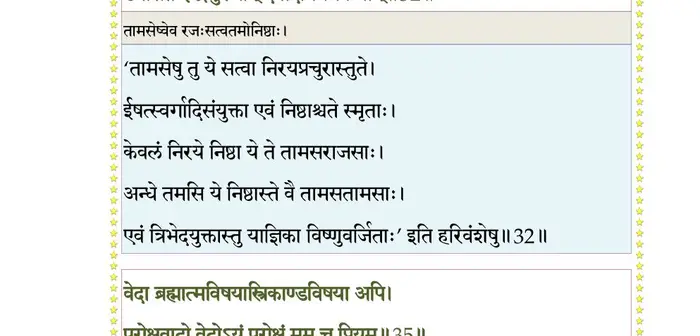
श्लोक ३३
इष्ट्वेह देवता यज्ञैर्गत्वा रंस्यामहे दिवि ।
तस्यान्त इह भूयास्म महाशाला महाकुलाः।। ३३ ।।
तस्यान्त इह भूयास्म महाशाला महाकुलाः।। ३३ ।।
श्लोक ३४
एवं पुष्पितया वाचा व्याक्षिप्तमनसां नृणाम् ।
मानिनां चातिस्तब्धानां मद्वार्ताऽपि न रोचते।। ३४ ।।
मानिनां चातिस्तब्धानां मद्वार्ताऽपि न रोचते।। ३४ ।।
श्लोक ३५
वेदा ब्रह्मात्मविषयास्त्रिकाण्डविषया अपि ।
परोक्षवादो वेदोऽयं परोक्षं मम च प्रियम् ।। ३५ ।।
परोक्षवादो वेदोऽयं परोक्षं मम च प्रियम् ।। ३५ ।।
भागवततात्पर्यनिर्णय
श्लोक ३६
शब्दब्रह्म सुदुर्बोधं प्राणेन्द्रियमनोमयम् ।
अनन्तपारं गम्भीरं दुर्विगाह्यं समुद्रवत् ।। ३६ ।।
अनन्तपारं गम्भीरं दुर्विगाह्यं समुद्रवत् ।। ३६ ।।
भागवततात्पर्यनिर्णय
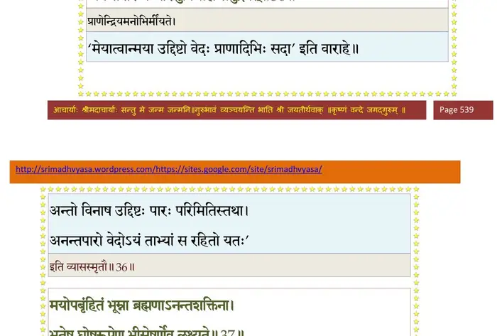
श्लोक ३७
मयोपबृंहितं भूम्ना ब्रह्मणाऽनन्तशक्तिना ।
भूतेषु घोषरूपेण बिसेषूर्णेव लक्ष्यते।। ३७ ।।
भूतेषु घोषरूपेण बिसेषूर्णेव लक्ष्यते।। ३७ ।।
भागवततात्पर्यनिर्णय
श्लोक ३८
यथोर्णनाभिर्हृदयादूर्णामुद्वहते मुखात् ।
आकाशाद् घोषवान् प्राणो मनसाऽऽस्पर्शरूपिणा।। ३८।।
आकाशाद् घोषवान् प्राणो मनसाऽऽस्पर्शरूपिणा।। ३८।।
भागवततात्पर्यनिर्णय
श्लोक ३९
छन्दोमयोऽमृतमयः सहस्रपदवीं प्रभुः ।
ओङ्कारेष्वञ्जितां स्पर्शस्वरोष्मान्तस्थभूषिताम्।। ३९ ।।
ओङ्कारेष्वञ्जितां स्पर्शस्वरोष्मान्तस्थभूषिताम्।। ३९ ।।
भागवततात्पर्यनिर्णय
श्लोक ४०
विचित्रभाषाविततां छन्दोभिश्चतुरुत्तरैः ।
अनन्तपारां बृहतीं सृजत्याक्षिपते स्वयम्।। ४० ।।
अनन्तपारां बृहतीं सृजत्याक्षिपते स्वयम्।। ४० ।।
भागवततात्पर्यनिर्णय
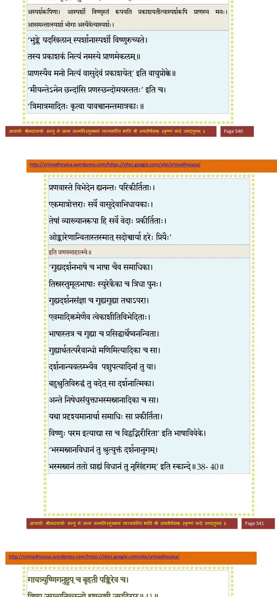
श्लोक ४१
गायत्र्युष्णिगनुष्टुप् च बृहती पङ्क्तिरेव च ।
त्रिष्टुप् जगत्यतिच्छन्दो ह्यष्ट्यत्यष्टी जगद् विराट्।। ४१ ।।
त्रिष्टुप् जगत्यतिच्छन्दो ह्यष्ट्यत्यष्टी जगद् विराट्।। ४१ ।।
भागवततात्पर्यनिर्णय
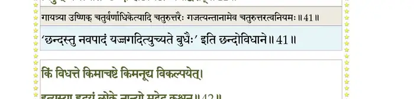
श्लोक ४२
किं विधत्ते किमाचष्टे किमनूद्य विकल्पयेत् ।
इत्यस्या हृदयं लोके (साक्षात्) नान्यो मद् वेद कश्चन ।। ४२ ।।
इत्यस्या हृदयं लोके (साक्षात्) नान्यो मद् वेद कश्चन ।। ४२ ।।
भागवततात्पर्यनिर्णय
श्लोक ४३
मां विधत्तेऽभिधत्ते मां विकल्पापोह्य इत्यहम्।। ४३ ।।
भागवततात्पर्यनिर्णय
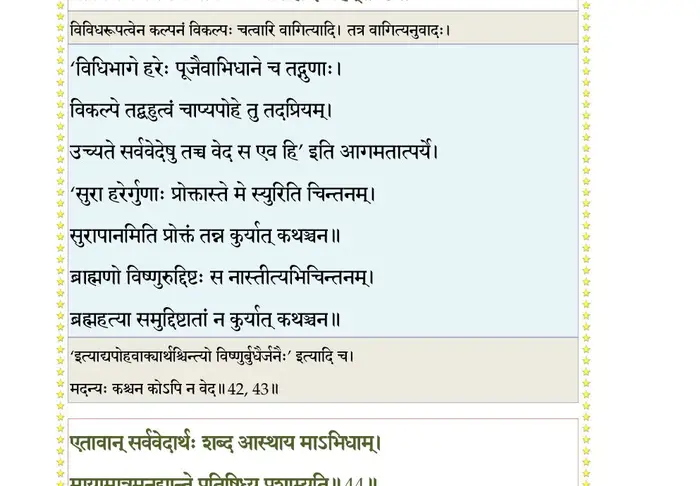
श्लोक ४४
एतावान् सर्ववेदार्थः शब्द आस्थाय माऽभिदाम् ।
मायामात्रमनूद्यान्ते प्रतिषिध्य प्रशाम्यति ।। ४४ ।।
मायामात्रमनूद्यान्ते प्रतिषिध्य प्रशाम्यति ।। ४४ ।।
भागवततात्पर्यनिर्णय
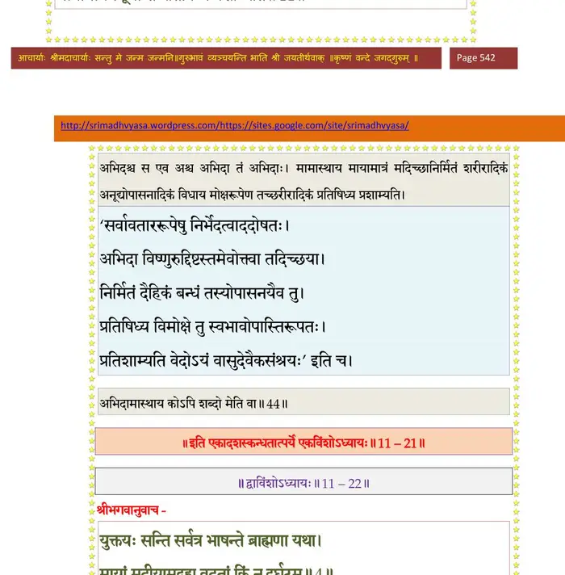
।। इति श्रीमद्भागवते एकादशस्कन्धे एकविंशोऽध्यायः ।।